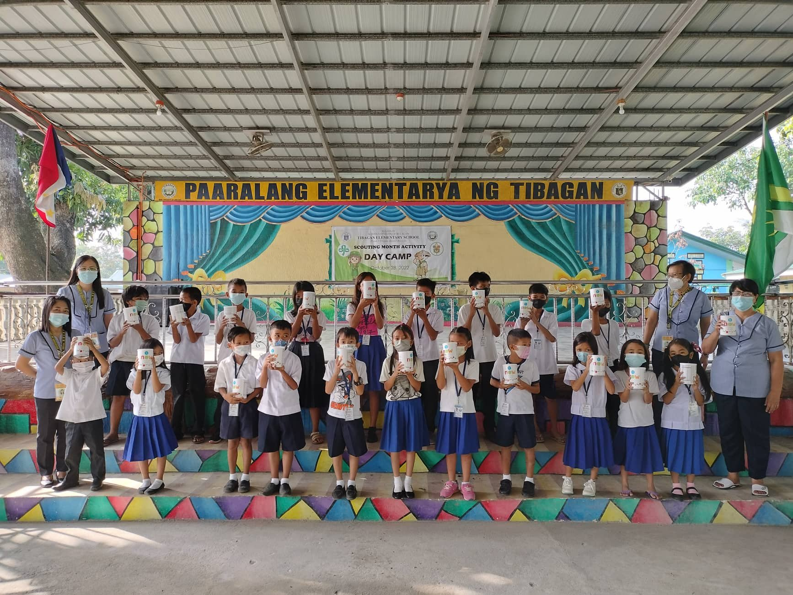
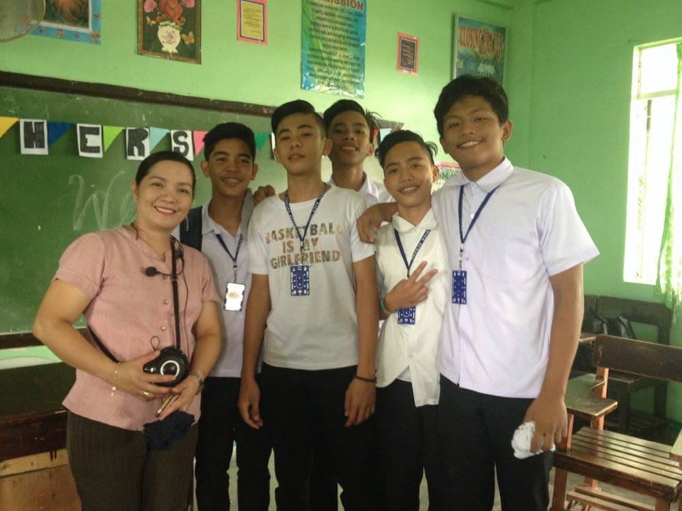
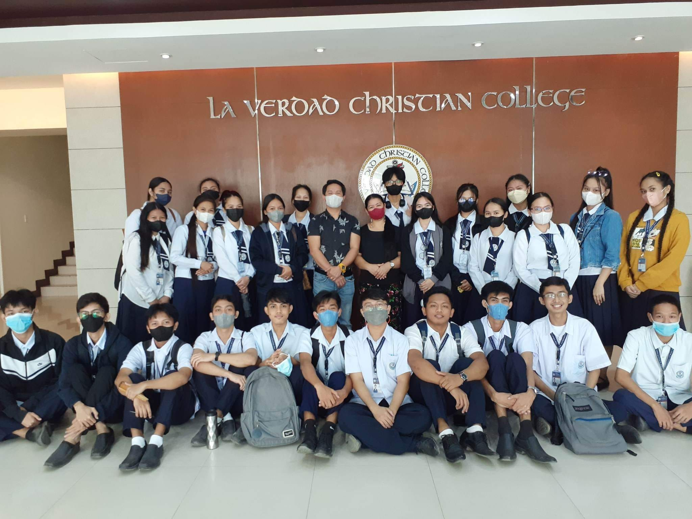

Tibagan Elementary School
Here in this school my academic competence and my self-awareness were shaped. I can't forget the times when I was just starting to learn, because my mother was my teacher. it was easy for me to read in school at that time, and I also graduated here in the year 2014 - 2015
Tibagan National HighSchool
This is the happiest time of my youth being in High School and I know that these are the days I will never forget because I spent many happy times and days in my High School and I know that during those times I was lazy to study I admit because this is exactly what I did, I graduated in 2014-2018
Laverdad Christian College
This is where I realized the things that are not all laughed at and shouldn't be comfortable, when I went to college I became serious because it was here that I understood better what kind of life I will be in the future, even if it is difficult at first but I know if God willing, I can pass today